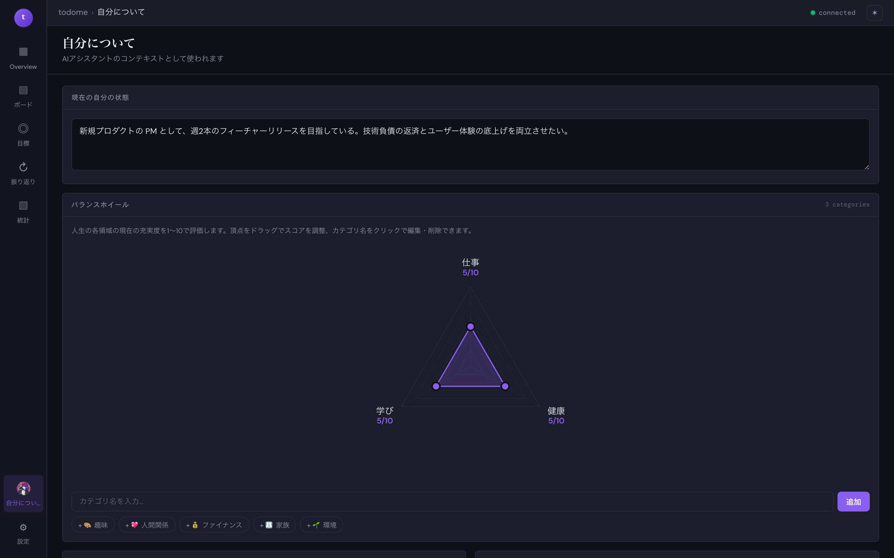

自分について
AI アシスタントのコンテキストとして使われるプロフィールを編集します。 現在の状態・バランスホイール・行動指針・やりたいことを記録することで、AI の提案がパーソナライズされます。

画面の見方
| 現在の自分の状態 | いまの仕事や生活の状況を自由記述。AI が提案を作る際に一番よく参照します。 入力した瞬間に自動保存されます。 |
|---|---|
| バランスホイール | 仕事 / 健康 / 学び / 人間関係 など、人生のカテゴリごとに 1〜10 の充実度を付けます。 カテゴリが 3 つ以上になるとレーダーチャートとして可視化されます。 |
| 行動指針 (画面下部) | 大事にしたい価値観・ポリシー。AI が判断に迷ったときの指針として使われます。 |
| やりたいこと | いつかやりたい大小さまざまな TODO。振り返りや目標設定の種になります。 |
ヒント:
バランスホイールのスコアはチャート上の頂点をドラッグして直感的に変えられます。
カテゴリ名クリックで名前の編集・削除ができます。